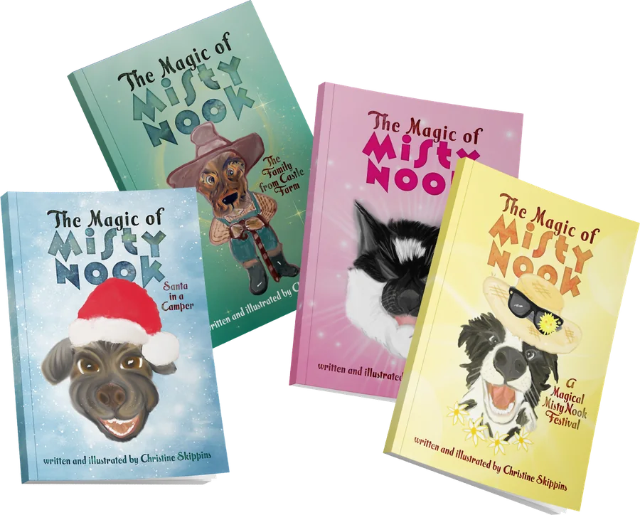
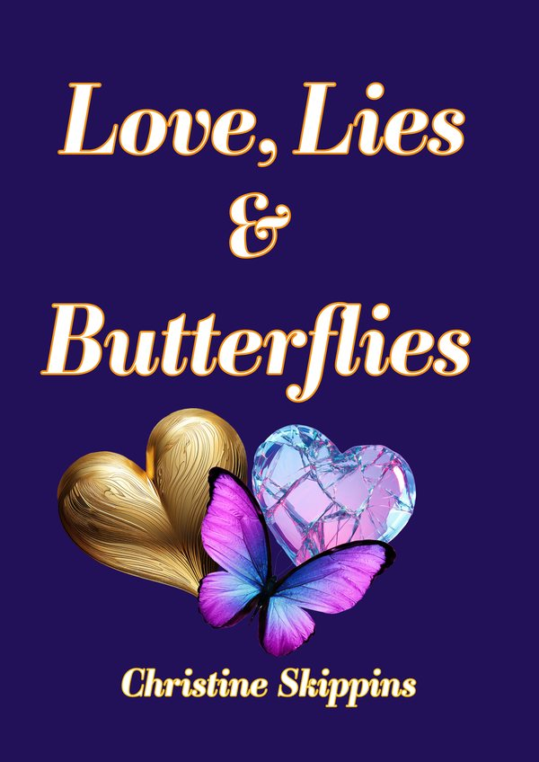

The Magic of Misty Nook
Bruno and his Friends
The Magic of Misty Nook is my first series of self-published children’s books. It draws on the incredible animals and dedicated staff I met while volunteering at Animal Rescue.
Each book is written and illustrated by me, from the cowboy-hatted dog of Castle Farm to Santa in a camper.
Every animal in Misty Nook has a story.

Four books so far
The whole of Misty Nook
The Family from Castle Farm. Santa in a Camper. A Magical Misty Nook Festival. Bruno and his Friends.
Pick one, or collect the set.

Her first novel for adults
Love, Lies and Butterflies
Jane’s comfortable life takes a dramatic turn when she uncovers her husband’s infidelity, leading to an unexpected divorce. As she navigates the aftermath, Jane embarks on a transformative journey of self-discovery that ultimately leads her to the landscapes of Provence.
Faced with choices between the charming yet deceitful James Warner, who captures her heart and her savings, and the safe but suffocating Barry Brown, Jane must confront what she truly desires.
Will she find the courage to embrace her independence?
Emily’s Story
A short story about my mother, born in Bermondsey, London, at the dawn of World War II: a childhood shaped by war.
About Christine
Three years ago I took a leap of faith and began writing, after dedicating 40 years to the finance world. It has transformed my life.
My first series of self-published children’s books draws inspiration from the animals and dedicated staff at Animal Rescue. Now I’m writing for adults too, fiction and nonfiction.
Where to find me
Books are in independent bookshop The Book Dragon and on Amazon.